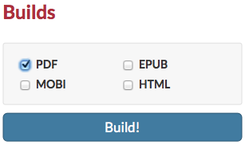

Atlas is currently in its Alpha release; this means that, while we feel the system is ready to be used, it's still actively under development and needs some rigorous testing. That's where you come in! Here are the most important things you need to know to get started.
Atlas (Alpha Release) Is Built on GitHub
The alpha version of Atlas is built on GitHub, one of the leading websites for collaborative file management using the git version-control system. What this means for you is:
You need a GitHub account in order to use Atlas (but if you've logged into Atlas by now, then you know this already).
You can see all your personal GitHub repos in Atlas, as well as all the repos you have permission to access within any organizations.
All changes you make in Atlas will be reflected in GitHub, and vice versa.
You can use branches in Atlas. On the project dashboard, select the branch you want to edit from the dropdown menu. (However, you cannot currently create new branches through Atlas.)
The branches dropdown menu shows all existing branches of your project.
Your Projects
When you sign into Atlas, the first thing you'll see is a list of all your existing GitHub repos. If you want to edit or build from an existing project in GitHub, simply find and click the project in the list. To create a new project, click the New Project button to the right of the projects list.
Click the New Project button in your project list to start fresh.
When you create a new project, Atlas will create a new repo in your GitHub account, prepopulated with some skeleton files to help you get started. You can edit those files, delete them, or just ignore them completely and create brand-new files of your own.
Once you select a project or create a new one, you'll be taken to the project dashboard, where you'll see a list of all files in the project, and have access to the ebook-building tools.
The Project Dashboard
The project dashboard is your landing page for each project. It lists all the files and folders in your repo, lets you switch branches, and gives you quick access to the build tools (more on building below).
From the project dashboard, your next steps will likely be either to start writing or to build your project. Click a file in your Files pane at left to open it in the editor. For more about building, see below.
Writing and Editing
The Atlas editor has two writing modes: the Visual Editor and the Code Editor. The Visual Editor is an online authoring environment similar to a word processor, with a formatting toolbar for tagging and styling your content. Documents created in the Visual Editor are stored as HTML5. The Code Editor allows you to view and edit the underlying HTML5 markup for your document. You can toggle back and forth between the Visual and Code Editors, and changes you make in either mode will immediately be reflected in the other.
While HTML5 is the default markup language for Atlas content, Atlas also supports documents written inMarkdown, AsciiDoc, and DocBook XML. All three of these formats can be edited using the Code Editor.
In both writing modes, you can navigate among your files using the Files menu to the left of the screen, create and delete filesand folders,upload images, save your project (top-right button in the editor, or use the keyboard shortcut ⌘-s/Ctrl+s) and even attach a custom commit message to each save (hover over the Save button to open the commit message dialog box).
Creating a New File
To create a new file, open the editor (by clicking an existing file), open the Files menu, and click the New File button at bottom left. Give your file a name, and hit Enter.
You can also organize your files into folders. To add a folder, click the New Folder button (next to the New File button). You can then click the folder name in the Files menu to open the folder and create new files within it.
Warning
You can't currently organize your files within Atlas. If you want to move existing files into a folder, you need to do that outside of Atlas using git.
Building
When you're finished writing, it's time to build your project so you can share it with the world. Atlas lets you export your project in four different formats: PDF, EPUB, MOBI, and HTML website.
The first time you build, you'll need to choose what formats to build, and what files and settings you want to apply to each format. Click Build Settings on the project dashboard to go to the Build Settings page.
Every format has a few different options you can choose. Two options that are common for all formats are:
Create a table of contents in your built project, based on your section headings. Learn more here.
Collect all index tags you've added and create an alphabetical index in your built project. Learn more here.
Choose a theme for your project (more on that next). Then at the bottom of the Build Settings page, choose which files to add to the build, drag the files into the correct order, and then start the build. If the build is successful, you'll get a link to download the file. If it fails, you'll get information about what went wrong (the usual culprit is markup errors).
For subsequent builds, you can use the Quick Build tools from your project dashboard. Choose the formats you want to build, and Atlas will automatically use the same settings you initially chose on the Build Settings page.
 The Builds menu on the project dashboard allows you to quickly trigger a build using your previously chosen settings.
Themes and Design
All of the Atlas output formats (PDF, EPUB, MOBI, and HTML) are powered by CSS, the standard styling language for the Web. You can write an entirely new theme using CSS, that can be used for multiple projects, by multiple people, or you can just add CSS customizations for your specific project.
To apply a theme to your project, choose one of the default themes on the Build Settings page, or add a link to your own custom theme.
Add a design to your project on the Build Settings page.
Building Locally with the API
Atlas gives you the option to build locally on the command line, using our API. (Note that you'll still need an internet connection for this to work.) This is great if you prefer to work locally using your own text editor but still want to see the final output.
Finding Help
For more details on any of the above topics, or for more advanced information, check out the Atlas documentation. If you’re stuck, have specific questions about the app, or just general ideas for improvement, you can contact the Atlas team at atlas@oreilly.com.